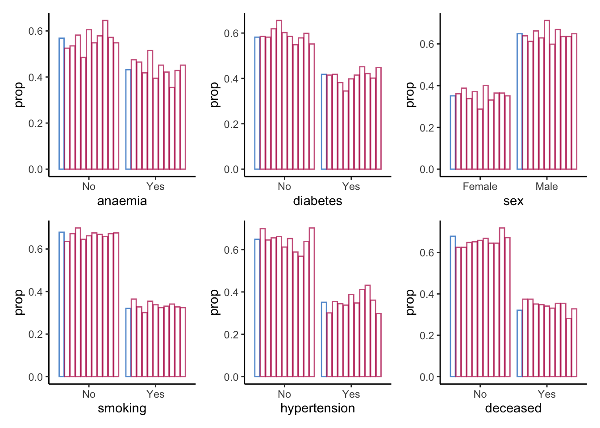
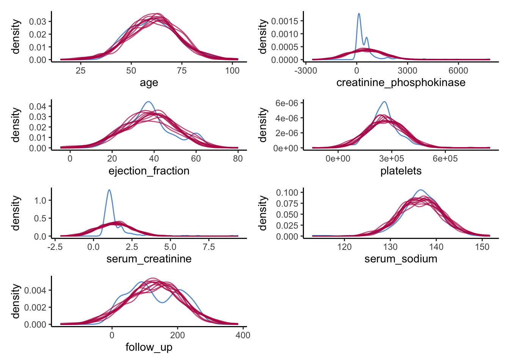
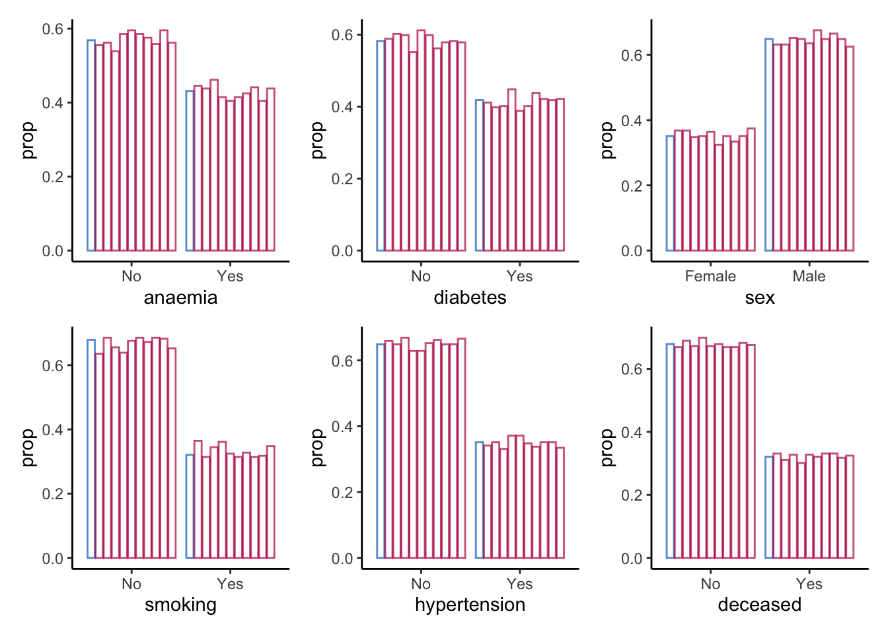
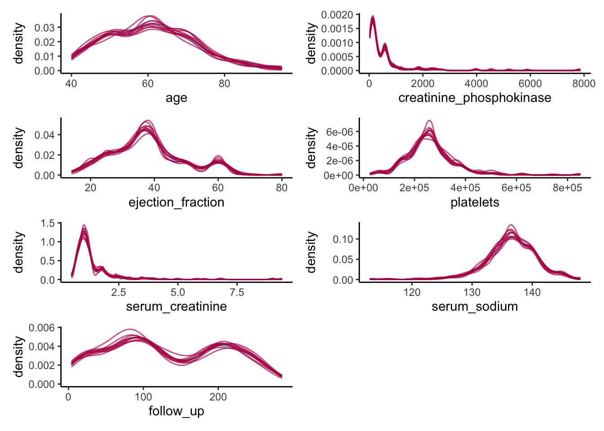
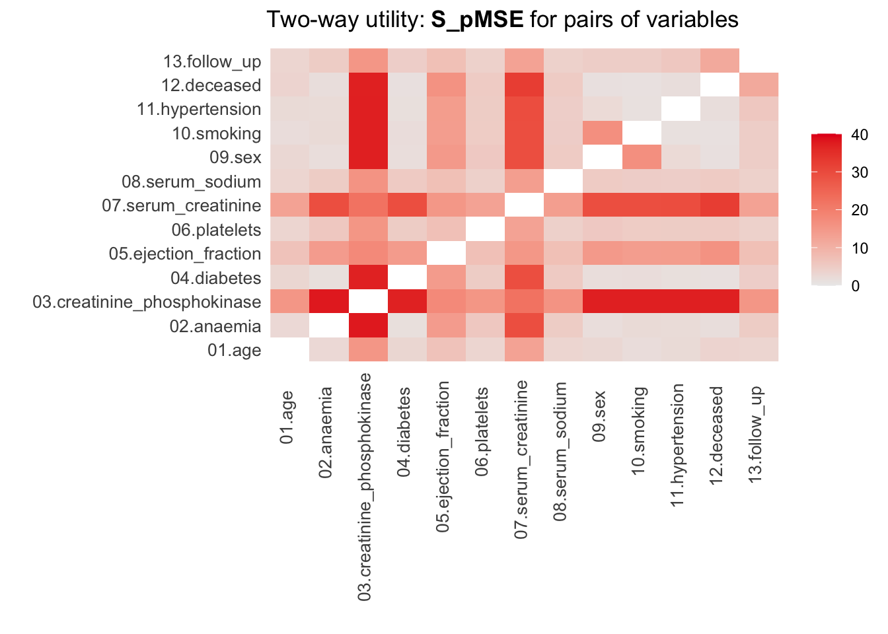
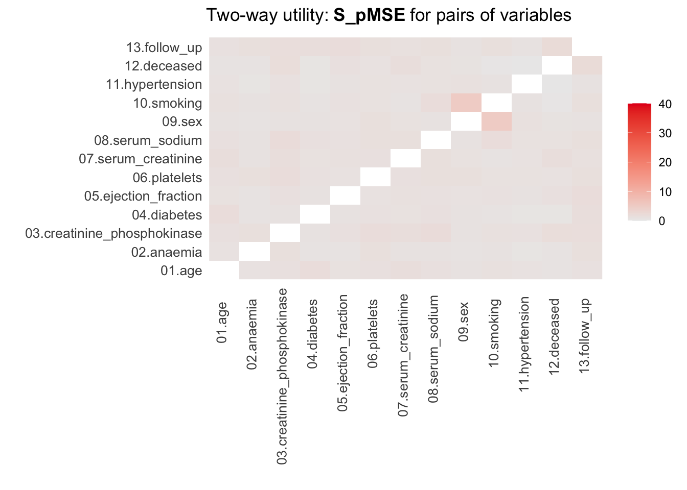

remotes::install_github("amices/mice")
remotes::install_github("amices/ggmice")
install.packages("ggplot2")
install.packages("patchwork")
install.packages("psych")
install.packages("purrr")
install.packages("synthpop")Synthetic data in R: Generating synthetic data with high utility using mice
Vignette 10 of 10
This is the tenth vignette in a series of ten.
Introduction
In this workshop, you will learn how to create and evaluate synthetic data in R. In the practical, we will work with the R package mice (van Buuren and Groothuis-Oudshoorn 2011). mice was originally developed to impute missing data, but, as you will experience, can also be used to impute synthetic data (see Volker and Vink 2021). Other alternatives to create synthetic data are, for example, the R-package synthpop (Nowok, Raab, and Dibben 2016), or the stand-alone software IVEware (“IVEware: Imputation and Variance Estimation Software,” n.d.).
In this workshop, you will (at least) use the packages mice (van Buuren and Groothuis-Oudshoorn 2011), ggmice (make sure to download the latest version from GitHub, Oberman 2022), ggplot2 (Wickham 2016), patchwork (Pedersen 2022), psych (Revelle 2022), purrr (Henry and Wickham 2022) and synthpop (Nowok, Raab, and Dibben 2016). Make sure to load them (in case you haven’t installed them already, install them first, using install.packages("package.name")).
library(mice) # to create the synthetic data
library(ggmice) # to make visualizations of the synthetic data
library(ggplot2) # required when using ggmice
library(patchwork) # to stitch multiple figures together
library(psych) # to obtain descriptive statistics
library(purrr) # to work with multiply imputed synthetic datasets
library(synthpop) # to assess the utility of our synthetic dataAdditionally, make sure to set a seed, so that your results can be compared with our results.
set.seed(1)Data: Heart failure clinical records
The Heart failure clinical records data set is a medical data set from the UCI Machine Learning Repository (click here for the source), originally collected by Ahmad (2017) from the Government College University, Faisalabad, Pakistan, and adapted and uploaded to the UCI MLR by Chicco and Jurman (2020). This data set contains medical information of 299 individuals on 13 variables, and is typically used to predict whether or not a patient will survive during the follow-up period, using several biomedical predictors.
If you have R Studio installed on your own machine, you can download the cleaned version of the Heart failure clinical records data set from my GitHub and load it as heart_failure, by running the following line of code.
heart_failure <- readRDS(url("https://thomvolker.github.io/UMCUSynthetic/data/heart_failure.RDS"))The Heart failure clinical records data consists of the following variables:
age: Age in yearsanaemia: Whether the patient has a decrease of red blood cells (No/Yes)hypertension: Whether the patient has high blood pressure (No/Yes)creatinine_phosphokinase: Level of the creatinine phosphokinase enzyme in the blood (mcg/L)diabetes: Whether the patient has diabetes (No/Yes)ejection_fraction: Percentage of blood leaving the heart at each contractionplatelets: Platelets in de blood (kiloplatelets/mL)sex: Sex (Female/Male)serum_creatinine: Level of serum creatinine in the blood (mg/dL)serum_sodium: Level of serum sodium in the blood (mg/dL)smoking: Whether the patient smokes (No/Yes)follow_up: Follow-up period (days)deceased: Whether the patient deceased during the follow-up period
After loading the data, it is always wise to first inspect the data, so that you have an idea what to expect.
head(heart_failure)| age | anaemia | creatinine_phosphokinase | diabetes | ejection_fraction | platelets | serum_creatinine | serum_sodium | sex | smoking | hypertension | deceased | follow_up |
|---|---|---|---|---|---|---|---|---|---|---|---|---|
| 75 | No | 582 | No | 20 | 265000 | 1.9 | 130 | Male | No | Yes | Yes | 4 |
| 55 | No | 7861 | No | 38 | 263358 | 1.1 | 136 | Male | No | No | Yes | 6 |
| 65 | No | 146 | No | 20 | 162000 | 1.3 | 129 | Male | Yes | No | Yes | 7 |
| 50 | Yes | 111 | No | 20 | 210000 | 1.9 | 137 | Male | No | No | Yes | 7 |
| 65 | Yes | 160 | Yes | 20 | 327000 | 2.7 | 116 | Female | No | No | Yes | 8 |
| 90 | Yes | 47 | No | 40 | 204000 | 2.1 | 132 | Male | Yes | Yes | Yes | 8 |
Additionally, we can ask for a summary of all variables, or use describe() from the psych-package to provide descriptive statistics of all variables.
Note. Make sure to install psych if you haven’t done so in the past.
summary(heart_failure) age anaemia creatinine_phosphokinase diabetes ejection_fraction
Min. :40.00 No :170 Min. : 23.0 No :174 Min. :14.00
1st Qu.:51.00 Yes:129 1st Qu.: 116.5 Yes:125 1st Qu.:30.00
Median :60.00 Median : 250.0 Median :38.00
Mean :60.83 Mean : 581.8 Mean :38.08
3rd Qu.:70.00 3rd Qu.: 582.0 3rd Qu.:45.00
Max. :95.00 Max. :7861.0 Max. :80.00
platelets serum_creatinine serum_sodium sex smoking
Min. : 25100 Min. :0.500 Min. :113.0 Female:105 No :203
1st Qu.:212500 1st Qu.:0.900 1st Qu.:134.0 Male :194 Yes: 96
Median :262000 Median :1.100 Median :137.0
Mean :263358 Mean :1.394 Mean :136.6
3rd Qu.:303500 3rd Qu.:1.400 3rd Qu.:140.0
Max. :850000 Max. :9.400 Max. :148.0
hypertension deceased follow_up
No :194 No :203 Min. : 4.0
Yes:105 Yes: 96 1st Qu.: 73.0
Median :115.0
Mean :130.3
3rd Qu.:203.0
Max. :285.0 This gives a good impression about the measurement levels of all variables, as well as the range of the possible values each variable can have.
describe(heart_failure)| vars | n | mean | sd | median | trimmed | mad | min | max | range | skew | kurtosis | se | |
|---|---|---|---|---|---|---|---|---|---|---|---|---|---|
| age | 1 | 299 | 6.083389e+01 | 1.189481e+01 | 60.0 | 6.021715e+01 | 14.82600 | 40.0 | 95.0 | 55.0 | 0.4188266 | -0.2204793 | 0.6878946 |
| anaemia* | 2 | 299 | 1.431438e+00 | 4.961073e-01 | 1.0 | 1.414938e+00 | 0.00000 | 1.0 | 2.0 | 1.0 | 0.2754750 | -1.9305367 | 0.0286906 |
| creatinine_phosphokinase | 3 | 299 | 5.818395e+02 | 9.702879e+02 | 250.0 | 3.654938e+02 | 269.83320 | 23.0 | 7861.0 | 7838.0 | 4.4184296 | 24.5254138 | 56.1131970 |
| diabetes* | 4 | 299 | 1.418060e+00 | 4.940671e-01 | 1.0 | 1.398340e+00 | 0.00000 | 1.0 | 2.0 | 1.0 | 0.3305857 | -1.8970241 | 0.0285726 |
| ejection_fraction | 5 | 299 | 3.808361e+01 | 1.183484e+01 | 38.0 | 3.742739e+01 | 11.86080 | 14.0 | 80.0 | 66.0 | 0.5498228 | 0.0005484 | 0.6844265 |
| platelets | 6 | 299 | 2.633580e+05 | 9.780424e+04 | 262000.0 | 2.567301e+05 | 65234.40000 | 25100.0 | 850000.0 | 824900.0 | 1.4476814 | 6.0252322 | 5656.1650591 |
| serum_creatinine | 7 | 299 | 1.393880e+00 | 1.034510e+00 | 1.1 | 1.189295e+00 | 0.29652 | 0.5 | 9.4 | 8.9 | 4.4113866 | 25.1888415 | 0.0598273 |
| serum_sodium | 8 | 299 | 1.366254e+02 | 4.412477e+00 | 137.0 | 1.368216e+02 | 4.44780 | 113.0 | 148.0 | 35.0 | -1.0376430 | 3.9841899 | 0.2551802 |
| sex* | 9 | 299 | 1.648829e+00 | 4.781364e-01 | 2.0 | 1.684647e+00 | 0.00000 | 1.0 | 2.0 | 1.0 | -0.6204576 | -1.6204183 | 0.0276513 |
| smoking* | 10 | 299 | 1.321070e+00 | 4.676704e-01 | 1.0 | 1.278008e+00 | 0.00000 | 1.0 | 2.0 | 1.0 | 0.7626368 | -1.4231112 | 0.0270461 |
| hypertension* | 11 | 299 | 1.351171e+00 | 4.781364e-01 | 1.0 | 1.315353e+00 | 0.00000 | 1.0 | 2.0 | 1.0 | 0.6204576 | -1.6204183 | 0.0276513 |
| deceased* | 12 | 299 | 1.321070e+00 | 4.676704e-01 | 1.0 | 1.278008e+00 | 0.00000 | 1.0 | 2.0 | 1.0 | 0.7626368 | -1.4231112 | 0.0270461 |
| follow_up | 13 | 299 | 1.302609e+02 | 7.761421e+01 | 115.0 | 1.292780e+02 | 105.26460 | 4.0 | 285.0 | 281.0 | 0.1265232 | -1.2238150 | 4.4885455 |
The describe() function gives more distributional information about all variables.
Creating synthetic data
Broadly speaking, two methods for creating synthetic data can be distinguished. The first one is based on parametric imputation models, which assumes that the structure of the data is fixed, and draws synthetic values from a pre-specified probability distribution. That is, after estimating a statistical model, the synthetic data are generated from a probability distribution, without making any further use of the observed data. In general, this procedure is less likely to result in an accidental release of disclosive information. However, these parametric methods are often less capable of capturing the complex nature of real-world data sets.
The subtleties of real-world data are often better reproduced with non-parametric imputation models. Using this approach, a non-parametric model is estimated, resulting in a donor pool out of which a single observation per observation and per variable is drawn. These models thus reuse the observed data to serve as synthetic data. Accordingly, much of the values that were in the observed data end up in the synthetic data. However, these observed data are generally combined in unique ways, it is generally not possible to link this information to the original respondents. The non-parametric procedures often yield better inferences, while still being able to prevent disclosure risk (although more research into measures to qualify the remaining risks is required). Therefore, this practical will showcase how to generate synthetic data using one such non-parametric method: classification and regression trees [CART; Breiman et al. (1984)].
Now you have a feeling of what the data looks like, we will use these two different ways to create synthetic data: a fully parametric approach, in which the data are synthesized using either linear or logistic regression, and a fully non-parametric approach, in which we synthesize all data using CART.
In general, mice proceeds as follows: from first to the last column in your data set, the given variable is synthesized based on all other variables in the data. Specifically, a model is trained on the observed data, and new values for variable \(X_j\) are imputed on the basis of all other variables \(X_{-j}\). This procedure is repeated sequentially, until all variables are synthesized. In this way, the relationships between the variables are generally preserved.
However, before we can use mice to generate synthetic data, we have to take care of some issues, because mice was not initially developed to create synthetic data. Specifically, we have to do two things: specify which values we want to overimpute and specify which method we want to use for the imputations.
1. Create a matrix of the same dimensions as the original data called where, specifying all cells as the logical operator TRUE.
Hint: You can use the mice function make.where().
where <- make.where(heart_failure, "all")2. Create a vector of length 13 called method, indicating which (parametric) method to use to synthesize each variable.
Hint: You can use make.method() to create an initial vector with imputation methods, and replace each cell with "pmm" with "norm".
method <- make.method(heart_failure, where = where)
method[method == "pmm"] <- "norm"Now we have specified which values ought to be synthetic, and which method to use to create the synthetic values, we can actually create the synthetic data.
3. Use mice() to create m = 10 synthetic data sets in an object called syn_param, using the previously specified method vector and where-matrix.
Hint: When creating synthetic data, a single iteration is sufficient when there is no missing data, so we can set maxit = 1.
syn_param <- mice(heart_failure,
m = 10,
maxit = 1,
method = method,
where = where,
printFlag = FALSE)Creating the synthetic data is a piece of cake. However, after creating the synthetic data, we must assess its quality in terms of data utility and disclosure risk. Quality control is conveniently performed using visual methods, and can be done using the package ggmice (Oberman 2022).
Synthetic data utility
The quality of synthetic data sets can be assessed on multiple levels and in multiple different ways. Starting on a univariate level, the distributions of the synthetic data sets can be compared with the distribution of the observed data. For the continuous variables, this can be done by comparing the densities of the synthetic data sets with the observed data sets. Later on, we also look at the utility of the synthetic data on a multivariate level.
Univariate data utility
4. To get an idea of whether creating the synthetic data went accordingly, compare the 10 rows of the fourth synthetic data set with the first 10 rows of the original data.
Hint: You can use complete(syn_param, 4) to extract the fourth synthetic data set from the syn_param object.
complete(syn_param, 4) |>
head(10)
heart_failure |>
head(10)| age | anaemia | creatinine_phosphokinase | diabetes | ejection_fraction | platelets | serum_creatinine | serum_sodium | sex | smoking | hypertension | deceased | follow_up |
|---|---|---|---|---|---|---|---|---|---|---|---|---|
| 48.28538 | No | 544.3140 | No | 43.49309 | 168606.67 | 2.0029503 | 134.1159 | Female | Yes | Yes | Yes | 97.19049 |
| 46.93784 | No | 2242.8349 | Yes | 17.44978 | 53449.81 | 1.6506376 | 146.7847 | Male | Yes | Yes | Yes | 246.37033 |
| 57.77604 | Yes | 185.1961 | No | 29.14009 | 374855.04 | 2.5081864 | 128.1695 | Male | No | No | Yes | 143.69784 |
| 80.37375 | Yes | 659.5714 | No | 60.69236 | 314479.31 | 0.9757324 | 137.1460 | Male | No | Yes | Yes | 81.84389 |
| 47.87052 | Yes | 591.7346 | No | 18.68507 | 208443.43 | 2.3928295 | 129.7961 | Male | No | No | Yes | 36.84320 |
| 67.23864 | Yes | 1598.3000 | No | 59.29677 | 91290.12 | 1.1576833 | 138.0340 | Male | No | Yes | Yes | 37.53685 |
| 70.53800 | No | 1717.0082 | No | 51.73267 | 196696.78 | 1.7746080 | 134.2336 | Male | Yes | No | Yes | 133.19167 |
| 72.59105 | No | 1300.4336 | Yes | 31.67865 | 308340.49 | 1.4321558 | 138.1010 | Male | No | No | No | 40.17883 |
| 64.17476 | Yes | 2498.2933 | No | 29.95634 | 279412.00 | 0.6372197 | 138.3070 | Female | No | Yes | Yes | 58.33464 |
| 85.05320 | Yes | 1020.7732 | No | 31.92641 | 185703.41 | 0.9960159 | 128.7269 | Male | Yes | No | Yes | -109.81722 |
| age | anaemia | creatinine_phosphokinase | diabetes | ejection_fraction | platelets | serum_creatinine | serum_sodium | sex | smoking | hypertension | deceased | follow_up |
|---|---|---|---|---|---|---|---|---|---|---|---|---|
| 75 | No | 582 | No | 20 | 265000 | 1.9 | 130 | Male | No | Yes | Yes | 4 |
| 55 | No | 7861 | No | 38 | 263358 | 1.1 | 136 | Male | No | No | Yes | 6 |
| 65 | No | 146 | No | 20 | 162000 | 1.3 | 129 | Male | Yes | No | Yes | 7 |
| 50 | Yes | 111 | No | 20 | 210000 | 1.9 | 137 | Male | No | No | Yes | 7 |
| 65 | Yes | 160 | Yes | 20 | 327000 | 2.7 | 116 | Female | No | No | Yes | 8 |
| 90 | Yes | 47 | No | 40 | 204000 | 2.1 | 132 | Male | Yes | Yes | Yes | 8 |
| 75 | Yes | 246 | No | 15 | 127000 | 1.2 | 137 | Male | No | No | Yes | 10 |
| 60 | Yes | 315 | Yes | 60 | 454000 | 1.1 | 131 | Male | Yes | No | Yes | 10 |
| 65 | No | 157 | No | 65 | 263358 | 1.5 | 138 | Female | No | No | Yes | 10 |
| 80 | Yes | 123 | No | 35 | 388000 | 9.4 | 133 | Male | Yes | Yes | Yes | 10 |
The first thing we can notice, is that the continuous variables are not rounded, as in the original data, which is logical, because we draw these values from a normal distribution. Apart from that, there are negative values in the synthetic version of the variable creatinine_phosphokinase, while the original data is strictly positive. We will come to these issues at a later moment.
Apart from inspecting the data itself, we can assess distributional similarity between the observed and synthetic data. For simplicity, we will first focus on the sixth synthetic data set.
5. Compare the descriptive statistics from the sixth synthetic data set with the descriptive statistics from the observed data.
Hint: Use the function describe() from the psych package to do this.
complete(syn_param, 6) |>
describe()
heart_failure |>
describe()The descriptive statistics are not exactly similar, but come rather close in terms of mean and standard deviation. When looking at higher-order moments and the minimum and maximum, we see that there are some noticeable differences. We pay more attention to these issues when we visually inspect the synthetic data.
6. Create a bar plot using geom_bar() for each categorical variable in the data, mapping these variables to the x-axis with one bar per category per imputed data set.
Hint 1: Within ggmice, set mapping = aes(x = VARIABLE, group = .imp), and within geom_bar(), set mapping = aes(y = ..prop..) and position = position_dodge() to make sure the bars are comparable.
Hint 2: You can map over all categorical variables by creating a vector with the column names of all categorical variables, and using purrr::map() in combination with aes_string() and patchwork::wrap_plots().
colnames(heart_failure)[map_lgl(heart_failure, is.factor)] %>%
map(~ ggmice(syn_param, mapping = aes_string(.x, group = '.imp')) +
geom_bar(mapping = aes(y = ..prop..),
position = position_dodge2(),
fill = "transparent",
show.legend = FALSE)) %>%
patchwork::wrap_plots()Warning: `aes_string()` was deprecated in ggplot2 3.0.0.
ℹ Please use tidy evaluation idioms with `aes()`.
ℹ See also `vignette("ggplot2-in-packages")` for more information.Warning: The dot-dot notation (`..prop..`) was deprecated in ggplot2 3.4.0.
ℹ Please use `after_stat(prop)` instead.
ℹ The deprecated feature was likely used in the ggmice package.
Please report the issue at <https://github.com/amices/ggmice>.
For the categorical variables, we seem to be doing a good job in recreating the data on a univariate level.
Now we do the same for the continuous variables, but rather than creating a bar chart, we create a density plot.
7. Create a density plot for each continuous variable with ggmice(), mapping these variables to the x-axis, using the function geom_density(), and make sure that each imputed set obtains its own density.
Hint: The code ggmice(syn, mapping = aes(x = VARIABLE, group = .imp)) creates a ggmice object per imputed set.
colnames(heart_failure)[map_lgl(heart_failure, is.numeric)] %>%
map(~ ggmice(data = syn_param,
mapping = aes_string(x = .x, group = '.imp')) +
geom_density(show.legend = F)) %>%
wrap_plots(ncol = 2)
Again, we see what we observed previously as well. For some of the continuous variables, we do a poor job in recreating a univariate distribution that is similar to the distribution of the observed variables. This gives a clear indication that something is wrong with our synthesis model.
Of course, this could have been expected, since some of the variables are highly skewed, while we impose a normal distribution on each variable. It is quite likely that we could have done a better job by using more elaborate data manipulation (e.g., transforming variables such that there distribution corresponds more closely to a normal distribution (and back-transforming afterwards)).
For now, we will try a different approach, namely a non-parametric one.
8. Use mice() to create m = 10 synthetic data sets in an object called syn_cart, using the previously specified where-matrix, but now use "cart" as the imputation method.
syn_cart <- mice(heart_failure,
m = 10,
maxit = 1,
method = "cart",
where = where,
printFlag = FALSE)For now, we will skip looking at the synthetic data, and continue directly to a the visual inspection of the newly created synthetic data, using the previous visualizations as before.
9. Create a bar plot using geom_bar() for each categorical variable in the data, mapping these variables to the x-axis with one bar per category per imputed data set.
colnames(heart_failure)[map_lgl(heart_failure, is.factor)] %>%
map(~ ggmice(syn_cart, mapping = aes_string(.x, group = '.imp')) +
geom_bar(mapping = aes(y = ..prop..),
position = position_dodge2(),
fill = "transparent",
show.legend = FALSE)) %>%
patchwork::wrap_plots()
For the categorical variables, we again seem to be doing fine: all proportions are comparable across observed and synthetic data.
Again, we do the same for the continuous variables, using a density plot.
10. Create a density plot for each continuous variable with ggmice(), mapping these variables to the x-axis, using the function geom_density(), and make sure that each imputed set obtains its own density. Compare these plots to the previous figures, what do you notice?
colnames(heart_failure)[map_lgl(heart_failure, is.numeric)] %>%
map(~ ggmice(data = syn_cart,
mapping = aes_string(x = .x, group = '.imp')) +
geom_density(show.legend = F)) %>%
wrap_plots(ncol = 2)
We do a much better job than we did before. The synthetic data seems to closely follow the distribution of the observed data, and all irregularities in the observed data are pretty much recreated in the synthetic data, which is what we hope to see.
There are also other, more formal ways to assess the utility of the synthetic data, although there is generally some critique against these methods (see, e.g., Drechsler 2022). Here, we will discuss the most formal utility measure, the \(pMSE\), but there are others (although all utility measures tend to correlate strongly). The \(pMSE\) is defined as \[ pMSE = \frac{1}{m}\sum^m_{j=1} \frac{1}{n_{obs} + n_{syn}} \Bigg( \sum^{n_{obs}}_{i=1} \Big(\hat{\pi}_i - \frac{n_{obs}}{n_{obs} + n_{syn}}\Big)^2 + \sum^{n_{obs} + n_{syn}}_{i={(n_{obs} + 1)}} \Big(\hat{\pi_i} - \frac{n_{syn}}{n_{obs} + n_{syn}}\Big)^2 \Bigg), \] which, in our case, simplifies to \[ pMSE = \frac{1}{10} \sum^{10}_{j=1} \frac{1}{598} \Bigg( \sum^{n_{obs} + n_{syn}}_{i=1} \Big(\hat{\pi}_i - \frac{1}{2}\Big)^2 \Bigg), \] where \(n_{obs}\) and \(n_{syn}\) are the sample sizes of the observed and synthetic data, \(\hat{\pi}_i\) is the probability of belonging to the synthetic data. Note that to calculate the this measure, each synthetic data set is stacked below the observed data, resulting in \(m=10\) sets of observed and synthetic data.
11. Calculate the \(pMSE\) for the variable creatinine_phosphokinase over all ten synthetic data sets, for both synthetic sets and compare the values between both synthesis methods.
Hint: First, create a list with all \(m=10\) synthetic data sets, then calculate the predicted probabilities for each data set, take the mean over these predicted probabilities, and subsequently, take the mean over the synthetic sets.
param_dats <- complete(syn_param, "all", include = F)
pi_param <- param_dats |>
map(~ dplyr::bind_rows(`0` = heart_failure,
`1` = .x,
.id = "Synthetic") |>
dplyr::mutate(Synthetic = as.factor(Synthetic)) |>
glm(formula = Synthetic ~ creatinine_phosphokinase, family = binomial) |>
predict(type = "response"))
cart_dats <- complete(syn_cart, "all", include = F)
pi_cart <- cart_dats |>
map(~ dplyr::bind_rows(`0` = heart_failure,
`1` = .x,
.id = "Synthetic") |>
dplyr::mutate(Synthetic = as.factor(Synthetic)) |>
glm(formula = Synthetic ~ creatinine_phosphokinase, family = binomial) |>
predict(type = "response"))
map_dbl(pi_param, ~mean((.x - 0.5)^2)) |>
mean()[1] 0.0002518855map_dbl(pi_cart, ~mean((.x - 0.5)^2)) |>
mean()[1] 0.0001196812If you don’t want to perform these calculations by hand, there is functionality in the R-package synthpop to calculate the \(pMSE\) for you.
complete(syn_param, "all", include = FALSE) |>
utility.gen.list(heart_failure,
vars = "creatinine_phosphokinase",
maxorder = 0,
method = "logit")Fitting syntheses: 1 2 3 4 5 6 7 8 9 10
Utility score calculated by method: logit
Call:
utility.gen.list(object = complete(syn_param, "all", include = FALSE),
data = heart_failure, method = "logit", maxorder = 0, vars = "creatinine_phosphokinase")
Mean utility results from 10 syntheses:
pMSE S_pMSE
0.000252 1.205020 complete(syn_cart, "all", include = FALSE) |>
utility.gen.list(heart_failure,
vars = "creatinine_phosphokinase",
maxorder = 0,
method = "logit")Fitting syntheses: 1 2 3 4 5 6 7 8 9 10
Utility score calculated by method: logit
Call:
utility.gen.list(object = complete(syn_cart, "all", include = FALSE),
data = heart_failure, method = "logit", maxorder = 0, vars = "creatinine_phosphokinase")
Mean utility results from 10 syntheses:
pMSE S_pMSE
0.000120 0.572555 It becomes immediately obvious that the \(pMSE\) is higher for the parametrically synthesized data sets, but it is hard to interpret these numbers. To get a more insightful measure, we can take ratio of the calculated \(pMSE\) over the expected \(pMSE\) under the null distribution of a correct synthesis model (i.e., in line with the data-generating model). The \(pMSE\)-ratio is given by \[ \begin{aligned} pMSE \text{ ratio } &= \frac{pMSE} {(k-1)(\frac{n_{\text{obs}}}{n_{\text{syn}} + n_{\text{obs}}})^2(\frac{n_{\text{syn}}}{n_{\text{syn}} + n_{\text{obs}}}) / (n_{\text{obs}} + n_{\text{syn}})} \\ &= \frac{pMSE}{(k-1)(\frac{1}{2})^3/(n_{obs} + n_{syn})}, \end{aligned} \] where \(k\) denotes the number of predictors in the propensity score model, including the intercept.
In our case, we get
pMSE_param <- map_dbl(pi_param, ~mean((.x - 0.5)^2)) |> mean()
pMSE_param / ((2-1)*(1/2)^3/(2*nrow(heart_failure)))[1] 1.20502pMSE_cart <- map_dbl(pi_cart, ~mean((.x - 0.5)^2)) |> mean()
pMSE_cart / ((2-1)*(1/2)^3/(2*nrow(heart_failure)))[1] 0.5725547Ideally, the \(pMSE\) ratio equals \(1\), but according to the synthpop authors, values below \(10\) are indicative of high quality synthetic data. This would indicate that both synthesis models are good models to synthesize the variable creatinine_phosphokinase. Yet, I would make some reservations with respect to the quality of the parametric synthesis model in this case.
Multivariate data utility
Being able to reproduce the original distributions is a good first step, but generally the goal of synthetic data reaches beyond that. Specifically, we generally also want to reproduce the relationships between the variables in the data. The problem here is that visualizations are often most insightful to assess the quality of synthetic data, but this is quite cumbersome for multivariate relationships. Creating visualizations beyond bivariate relationships is often not feasible, whereas displaying all bivariate relationships in the data already results in \(p(p-1)/2\) different figures.
In the synthetic data literature, a distinction is often made between general and specific utility measures. General utility measures assess to what extent the relationships between combinations of variables (and potential interactions between them) are preserved in the synthetic data set. These measures are often for pairs of variables, or for all combinations of variables. Specific utility measures focus, as the name already suggests, on a specific analysis. This analysis is performed on the observed data and the synthetic data, and the similarity between inferences on these data sets is quantified.
General utility measures
Continuing with our \(pMSE\) approach, we can inspect which interactions of variables can predict whether observations are “true” or “synthetic” using the standardized pMSE measure, similarly to what we just did using individual variables. Hence, we predict whether observations can be classified based on the interaction of two variables.
Using the functionality of synthpop, we can assess the utility of all bivariate relationships by calculating the \(pMSE\)-ratio for each pair of variables (including their interaction).
12. Use the function utility.gen.list() from the synthpop package to calculate the \(pMSE\)-ratio for each pair of variables for both synthetic sets. What do you see?
utility.gen.list(param_dats, heart_failure)Running 50 permutations to get NULL utilities and printing every 10th.
synthesis 10 20 30 40 50
synthesis 10 20 30 40 50
synthesis 10 20 30 40 50
synthesis 10 20 30 40 50
synthesis 10 20 30 40 50
synthesis 10 20 30 40 50
synthesis 10 20 30 40 50
synthesis 10 20 30 40 50
synthesis 10 20 30 40 50
synthesis 10 20 30 40 50
Utility score calculated by method: cart
Call:
utility.gen.list(object = param_dats, data = heart_failure)
Null utilities simulated from a permutation test with 50 replications.
Mean utility results from 10 syntheses:
pMSE S_pMSE
0.182293 3.268138 utility.gen.list(cart_dats, heart_failure)Running 50 permutations to get NULL utilities and printing every 10th.
synthesis 10 20 30 40 50
synthesis 10 20 30 40 50
synthesis 10 20 30 40 50
synthesis 10 20 30 40 50
synthesis 10 20 30 40 50
synthesis 10 20 30 40 50
synthesis 10 20 30 40 50
synthesis 10 20 30 40 50
synthesis 10 20 30 40 50
synthesis 10 20 30 40 50
Utility score calculated by method: cart
Call:
utility.gen.list(object = cart_dats, data = heart_failure)
Null utilities simulated from a permutation test with 50 replications.
Mean utility results from 10 syntheses:
pMSE S_pMSE
0.091402 1.779868 The CART model was somewhat better, but the difference is relatively small. To get more insight into which variables and bivariate relationships were synthesized accordingly, and which can be improved, we can use utility.tables.list().
13. Use the function utility.tables.list() from the synthpop package to calculate the \(pMSE\)-ratio for each pair of variables for both synthetic sets. What do you see?
utility.tables.list(param_dats, heart_failure,
min.scale = 0, max.scale = 40)
Two-way utility: S_pMSE value plotted for 78 pairs of variables.
Variable combinations with worst 5 utility scores (S_pMSE):
02.anaemia:03.creatinine_phosphokinase
37.9215
03.creatinine_phosphokinase:10.smoking
37.2384
03.creatinine_phosphokinase:11.hypertension
37.2016
03.creatinine_phosphokinase:09.sex
37.1995
03.creatinine_phosphokinase:12.deceased
37.0353 
Medians and maxima of selected utility measures for all tables compared
Medians Maxima
pMSE 0.0162 0.1115
S_pMSE 5.1485 37.9215
df 9.0000 24.0000
For more details of all scores use print.tabs = TRUE.utility.tables.list(cart_dats, heart_failure,
min.scale = 0, max.scale = 40)
Two-way utility: S_pMSE value plotted for 78 pairs of variables.
Variable combinations with worst 5 utility scores (S_pMSE):
09.sex:10.smoking
5.1058
12.deceased:13.follow_up
2.1157
03.creatinine_phosphokinase:08.serum_sodium
1.9585
05.ejection_fraction:13.follow_up
1.8282
01.age:04.diabetes
1.7879 
Medians and maxima of selected utility measures for all tables compared
Medians Maxima
pMSE 0.0021 0.0098
S_pMSE 1.0434 5.1058
df 9.0000 24.0000
For more details of all scores use print.tabs = TRUE.Here, we finally see that our parametric synthesis model is severely flawed. Some of the \(pMSE\) ratios are larger than 30, which means that these variables are close to useless when the goal is to make inferences. Our non-parametric synthesis model is doing very good. A maximum \(pMSE\)-ratio that is smaller than \(5\) actually indicates that our synthetic data are of high quality.
Specific utility measures
Specific utility measures assess whether the same analysis on the observed and the synthetic data gives similar results. Say that we are interested in, for instance, the relationship between whether a person survives, the age of this person, whether this person has diabetes and whether or not this person smokes, including the follow-up time as a control variable in the model.
14. Fit this model as a logistic regression model using with(), and pool the results over synthetic data sets. Compare the synthetic data results with the results obtained on the original data, what do you see?
with(syn_param, glm(deceased ~ age + diabetes + smoking + follow_up,
family = binomial)) |>
pool(rule = "reiter2003") |>
summary() |>
as.data.frame() |>
tibble::column_to_rownames('term') |>
round(3) estimate std.error statistic df p.value
(Intercept) -0.776 0.814 -0.953 481.110 0.341
age 0.014 0.012 1.170 406.170 0.243
diabetesYes -0.169 0.272 -0.620 1533.257 0.535
smokingYes 0.068 0.282 0.241 1420.343 0.810
follow_up -0.006 0.002 -2.889 175.166 0.004with(syn_cart, glm(deceased ~ age + diabetes + smoking + follow_up,
family = binomial)) |>
pool(rule = "reiter2003") |>
summary() |>
as.data.frame() |>
tibble::column_to_rownames('term') |>
round(3) estimate std.error statistic df p.value
(Intercept) -0.729 0.857 -0.851 1915.748 0.395
age 0.022 0.012 1.813 2702.451 0.070
diabetesYes 0.269 0.295 0.910 1275.080 0.363
smokingYes -0.068 0.308 -0.223 2547.864 0.824
follow_up -0.013 0.002 -5.809 1090.560 0.000 glm(deceased ~ age + diabetes + smoking + follow_up,
family = binomial,
data = heart_failure) |>
broom::tidy() |>
tibble::column_to_rownames('term') |>
round(3) estimate std.error statistic p.value
(Intercept) -0.847 0.903 -0.937 0.349
age 0.037 0.013 2.740 0.006
diabetesYes 0.110 0.310 0.355 0.722
smokingYes -0.206 0.326 -0.631 0.528
follow_up -0.019 0.003 -7.486 0.000The results obtained when using solely parametric methods deviate substantially from the results obtained on the original data. When using CART, the results are somewhat different, but are actually quite comparable. All coefficients are estimated with a similar sign, and the deviations from the true relationships are small compared to the standard errors.
Statistical disclosure control
In general, synthetic data protects the privacy of participants quite well, especially when all cells are imputed. Even if some observations are partly reproduced, it is hard, if not impossible, to assess which part of an observations values are real, and which are fake. Hence, with respect to individuals little can be learned from synthetic data. However, it is always good to assess whether you are not accidentally releasing an actual observation in the synthetic data. Even though an attacker is not likely to find out, participants being able to “identify” themselves in the synthetic data set may result in trust problems in the future.
17. Append the original data to the synthetic data, and check whether some of the observations in the original data also occur in the synthetic data.
Hint 1: You do not have to do this for the data generated with parametric methods, because these do not reproduce the original values, at least not for the continuous variables.
Hint 2: Start with the synthetic data, remove the variables .imp and .id, and append the original data to it. Subsequently, you can use duplicated() and which() to check whether (and if so, which) observations occur repeatedly.
complete(syn_cart, "long") %>%
dplyr::select(-c(.imp, .id)) %>%
dplyr::bind_rows(heart_failure) %>%
duplicated %>%
which()integer(0)None of observations occur repeatedly, so we have not accidentally copied any of the “true” observations into the synthetic sets. This provides some safeguard against accidentally releasing sensitive information. However, if the data contains really sensitive information, this might not be enough, and one could for example check whether the synthetic data differs from the observed data along multiple dimensions (i.e., variables). Such additional checks depend on the problem at hand. Additionally, one might want to take additional measures against accidentally disclosing information about observations, for example by drawing some of the variables from a parametric distribution. Even before distribution synthetic data, think wisely about whether there may remain any disclosure risks with respect to the data that will be distributed.
Inferences from synthetic data
Lastly, when you have obtained a synthetic data set and want to make inferences from this set, you have to be careful, because generating synthetic data adds variance to the already present sampling variance that you take into account when evaluating hypotheses. Specifically, if you want to make inferences with respect to the sample of original observations, you can use unaltered analysis techniques and corresponding, conventional standard errors.
However, if you want to inferences with respect to the population the sample is taken from, you will have to adjust the standard errors, to account for the fact that the synthesis procedure adds additional variance. The amount of variance that is added, depends on the number of synthetic data sets that are generated. Intuitively, when generating multiple synthetic data sets, the additional random noise that is induced by the synthesis cancels out, making the parameter estimates more stable.
To make valid inferences, you can use the combining rules presented by Reiter (2003). For scalar \(Q\), with \(q^{(i)}\) and \(u^{(i)}\) the point estimate and the corresponding variance estimate in synthetic data set \(D^{(i)}\) for \(i = 1, \dots, m\), the following quantities are needed for inferences:
\[ \begin{aligned} \bar{q}_m &= \sum_{i=1}^m \frac{q^{(i)}}{m}, \\ b_m &= \sum_{i=1}^m \frac{(q^{(i)} - \bar{q}_m)}{m-1}, \\ \bar{u}_m &= \sum_{i=1}^m \frac{u^{(i)}}{m}. \end{aligned} \]
The analyst can use \(\bar{q}_m\) to estimate \(Q\) and \[ T_p = \frac{b_m}{m} + \bar{u}_m \] to estimate the variance of \(\bar{q}_m\). Then, \(\frac{b_m}{m}\) is the correction factor for the additional variance due to using a finite number of imputations.
When using pool(..., rule = "reiter2003"), the correct pooling rules are used automatically.
References
Ahmad, Assia AND Bhatti, Tanvir AND Munir. 2017. “Survival Analysis of Heart Failure Patients: A Case Study.” PLOS ONE 12 (7): 1–8. https://doi.org/10.1371/journal.pone.0181001.
Breiman, Leo, Jerome Friedman, Charles J Stone, and Richard A Olshen. 1984. Classification and Regression Trees. New York: CRC press. https://doi.org/10.1201/9781315139470.
Chicco, Davide, and Giuseppe Jurman. 2020. “Machine Learning Can Predict Survival of Patients with Heart Failure from Serum Creatinine and Ejection Fraction Alone.” BMC Medical Informatics and Decision Making 20 (1): 16. https://doi.org/10.1186/s12911-020-1023-5.
Drechsler, Jörg. 2022. “Challenges in Measuring Utility for Fully Synthetic Data.” In Privacy in Statistical Databases, edited by Josep Domingo-Ferrer and Maryline Laurent, 220–33. Cham: Springer International Publishing. https://doi.org/10.1007/978-3-031-13945-1_16.
Henry, Lionel, and Hadley Wickham. 2022. Purrr: Functional Programming Tools. https://CRAN.R-project.org/package=purrr.
“IVEware: Imputation and Variance Estimation Software.” n.d. https://www.src.isr.umich.edu/wp-content/uploads/iveware-manual-Version-0.3.pdf.
Nowok, Beata, Gillian M. Raab, and Chris Dibben. 2016. “synthpop: Bespoke Creation of Synthetic Data in R.” Journal of Statistical Software 74 (11): 1–26. https://doi.org/10.18637/jss.v074.i11.
Oberman, Hanne. 2022. Ggmice: Visualizations for ’Mice’ with ’Ggplot2’. https://CRAN.R-project.org/package=ggmice.
Pedersen, Thomas Lin. 2022. Patchwork: The Composer of Plots. https://CRAN.R-project.org/package=patchwork.
Reiter, Jerome P. 2003. “Inference for Partially Synthetic, Public Use Microdata Sets.” Survey Methodology 29 (2): 181–88.
Revelle, William. 2022. Psych: Procedures for Psychological, Psychometric, and Personality Research. Evanston, Illinois: Northwestern University. https://CRAN.R-project.org/package=psych.
van Buuren, Stef, and Karin Groothuis-Oudshoorn. 2011. “mice: Multivariate Imputation by Chained Equations in r.” Journal of Statistical Software 45 (3): 1–67. https://doi.org/10.18637/jss.v045.i03.
Volker, Thom Benjamin, and Gerko Vink. 2021. “Anonymiced Shareable Data: Using Mice to Create and Analyze Multiply Imputed Synthetic Datasets.” Psych 3 (4): 703–16. https://doi.org/10.3390/psych3040045.
Wickham, Hadley. 2016. Ggplot2: Elegant Graphics for Data Analysis. Springer-Verlag New York. https://ggplot2.tidyverse.org.